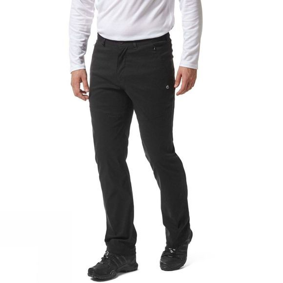

Rab Downpour Plus
Men | Women
The Mens Downpour Plus Jacket from Rab is a warm and lightweight waterproof jacket perfect for whatever the weather throws your way. This outdoor jacket has all the features you may require from a lightweight waterproof jacket featuring two YKK zipped chest pockets along with a helmet compatible hood. No matter if you're taking a casual stroll through town or walking through a forest path on a rainy day, this jacket will keep you dry and comfortable. Wherever your adventure takes you, this jacket will keep you warm as well as dry thanks to the Pertex Shield 2.5 Layer fabric, even if you get caught out in the worst weather conditions you can stay dry.
Craghoppers Kiwi Pro II
Men | Women
The Mens Kiwi Pro II Trousers from Craghoppers are ideal if you like the freedom to stretch, leap and scramble. Engineered to deliver outstanding performance, Kiwi Pro's offer unrestricted freedom of movement with added sun protection and a splash-proof finish. Challenge them to the ultimate outdoor workout and they’ll pass with flying colours.
Salomon Tibai Mid Gore-Tex
Men | Women
The Mens Tibai GTX Mid Boot from Salomon is a hardwearing and stable pair of walking boots. Be it a hike or trail, the Tibai Gore-Tex Mid Boots will keep your feet feeling comfortable as well as providing traction while hiking over rough terrain. Not only do the Tibai Walking Boots provide comfort but also have a Gore-Tex lining meaning they are fully waterproof. Keep exploring even in the harshest weather conditions, no matter the climate. These Walking Boots also feature an Ortholite footbed meaning that your feet will stay comfortable allowing you to stay outside and hike for longer.